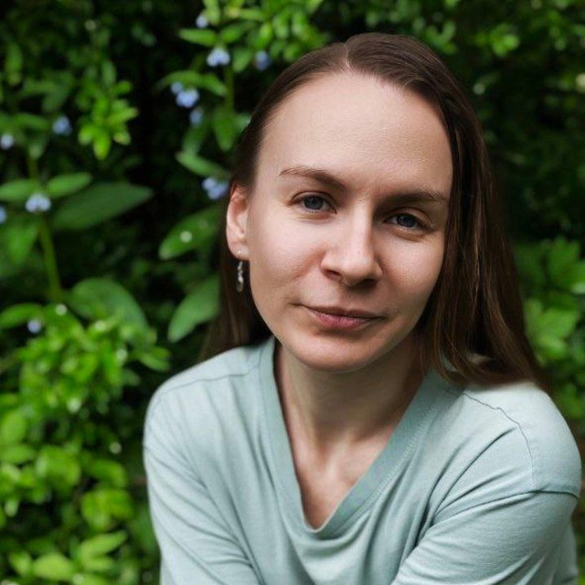

My main goal is to stay up to date with current trends in programming and not lose my grip while I am currently unemployed. I previously worked as a full-stack developer with over three years of experience across various technologies—primarily C# on the backend, and Ext.NET, Vue.js 2, and Angular on the frontend.
After losing my job, I made the decision to switch into frontend development and dig deep into the areas where I felt my knowledge was lacking. I am now focused on filling the gaps in my understanding of modern HTML, CSS, and JavaScript/TypeScript.
My strengths include being communicative, attentive to details, creative, and I bring a user-focused mindset along with strong collaboration skills. I look forward to working on interesting projects and am open to participating in collaborations as a volunteer.
const createArrayOfPagesBySelectedPattern = () => {
for (let i = 1; i <= Math.min(boundaries, totalPages); i++) {
pageNumbers.push(i);
}
const shouldShowLeftEllipsis = page - siblings > boundaries + 1;
if (shouldShowLeftEllipsis) {
pageNumbers.push(-1);
}
const start = Math.max(boundaries + 1, page - siblings);
const end = Math.min(totalPages - boundaries, page + siblings);
for (let i = start; i <= end; i++) {
if (i > boundaries && i <= totalPages - boundaries) {
pageNumbers.push(i);
}
}
const shouldShowRightEllipsis = page + siblings < totalPages - boundaries;
if (shouldShowRightEllipsis) {
pageNumbers.push(-2);
}
for (
let i = Math.max(totalPages - boundaries + 1, boundaries + 1);
i <= totalPages;
i++
) {
pageNumbers.push(i);
}
};